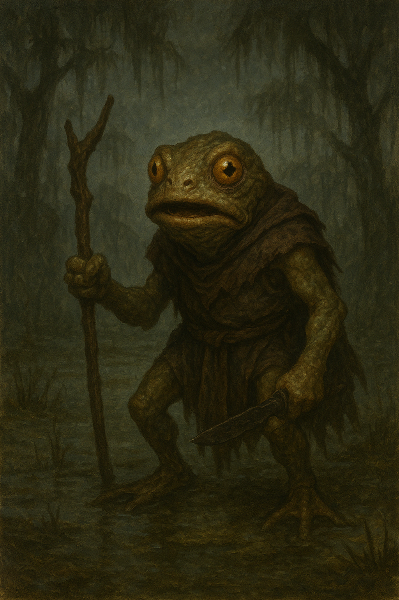

The Kuo-toa that haunt the shores and river mouths of the isle are remnants of a people long driven underground. Twisted by generations in darkness, they have crawled back into the world through cracks and caverns, surfacing along the western coast. Frog-like in form and unsettling in manner, these creatures gather in small hunting bands, armed with crude spears and shields of driftwood. Though dim-witted, they are relentless and cunning in their own way, often ambushing travelers under cover of night or fog. Sailors whisper that some wear the tattered remnants of stolen clothing, a chilling reminder of their raids upon the unlucky. The people of Spearhead Landing know them as a dire omen: where the Kuo-toa stir, worse things are never far behind.
